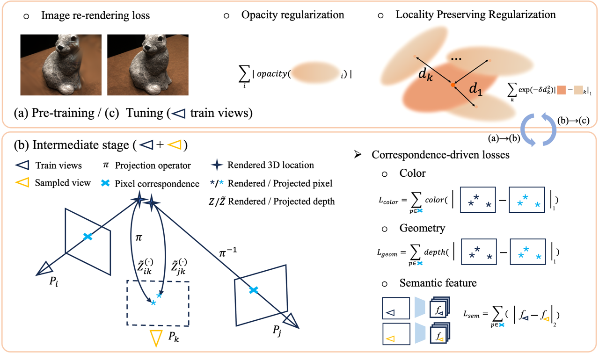

|
|
ShapeSplat: A Large-scale Dataset of Gaussian Splats and Their Self-Supervised Pretraining
Qi Ma*,
Yue Li*,
Bin Ren,
Nicu Sebe,
Ender Konukoglu,
Theo Gevers,
Luc Van Gool,
Danda Pani Paudel
3DV 2025
|
|
|
LoopSplat: Loop Closure by Registering 3D Gaussian Splats
Liyuan Zhu,
Yue Li,
Erik Sandström,
Shengyu Huang,
Konrad Schindler,
Iro Armeni
3DV 2025
|
|

|
FewViewGS: Gaussian Splatting with Few View Matching and Multi-stage Training
Ruihong Yin,
Vladimir Yugay,
Yue Li,
Sezer Karaoglu,
Theo Gevers
NeurIPS 2024
|
|
|
Gaussian-SLAM: Photo-realistic Dense SLAM with Gaussian Splatting
Vladimir Yugay,
Yue Li,
Theo Gevers,
Martin R. Oswald
arXiv 2023
|
|
|
Point-SLAM: Dense Neural Point Cloud-based SLAM
Erik Sandström*,
Yue Li*,
Luc Van Gool,
Martin R. Oswald
ICCV 2023
|